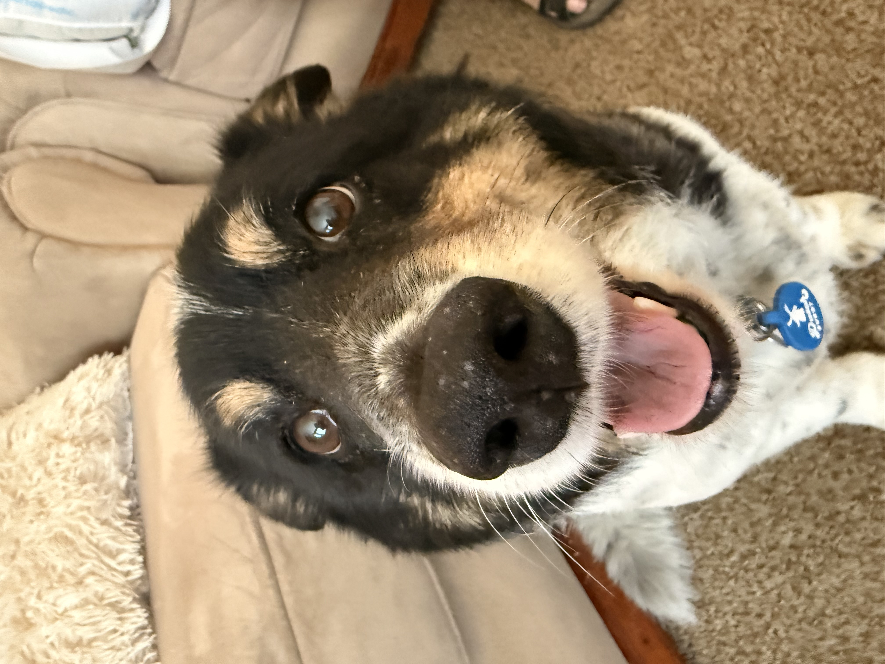

Find Your New Best Friend at Paws & Homes
Welcome to the Paws & Homes Portal. Our mission is to connect loving families in our local community with shelter animals looking for a second chance at a forever home. Whether you are looking to adopt or temporarily foster, we make the process simple, supportive, and completely transparent.
Apply to AdoptFrom Shelter to Sofa: Max's Journey
When the Miller family met Max, a three-year-old Golden Retriever mix, it was love at first sight. Today, Max spends his afternoons chasing tennis balls in a spacious backyard and curling up safely by the fireplace.
"Adopting Max was the best decision our family ever made," says Sarah Miller.
